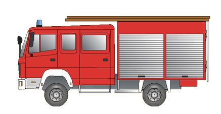

LF 10

Einsatzzweck:
Das Löschgruppenfahrzeug LF 10 dient überwiegend zur Brandbekämpfung, zum Fördern von Wasser und zur Durchführung einfacher Technischer Hilfeleistung.
Wesentliche Merkmale:
- Besatzung 1/8/9 (Gruppe)
- Feuerlöschkreiselpumpe FPN 10-1000
- Löschwasserbehälter 1.200 l
- Einrichtung zur schnellen Wasserabgabe oder Schnellangriffseinrichtung
- Standard- und ggf. Zusatzbeladung
- Beladung für eine Gruppe